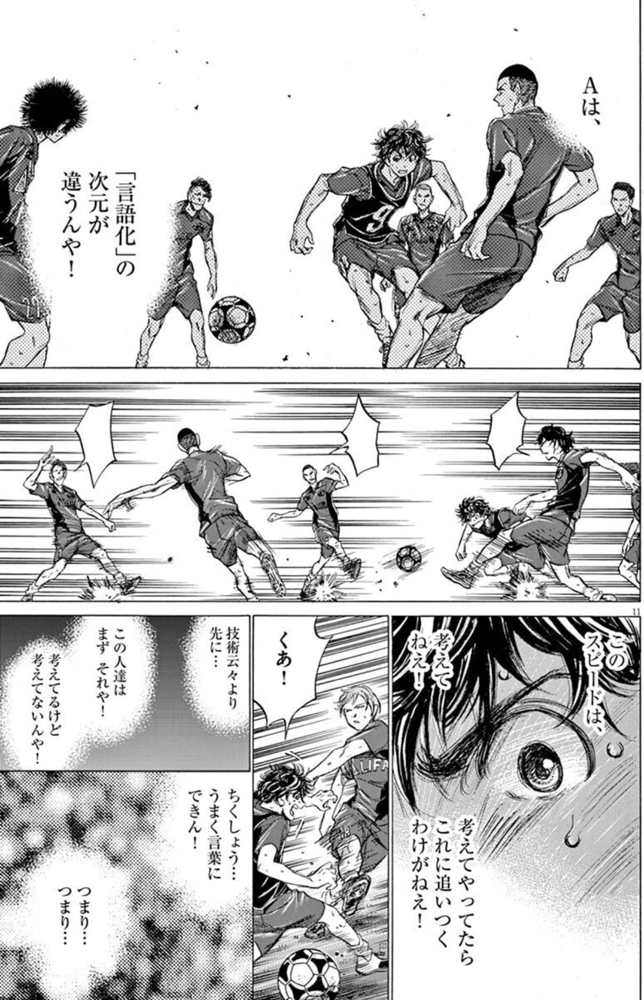
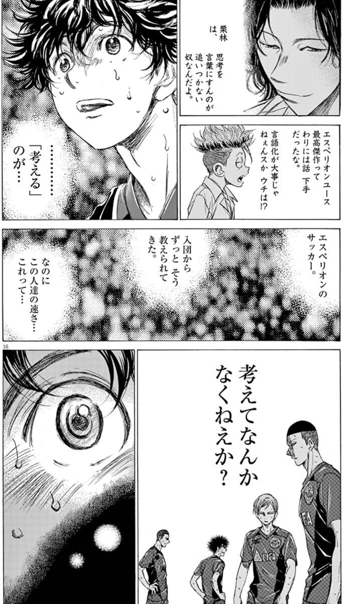
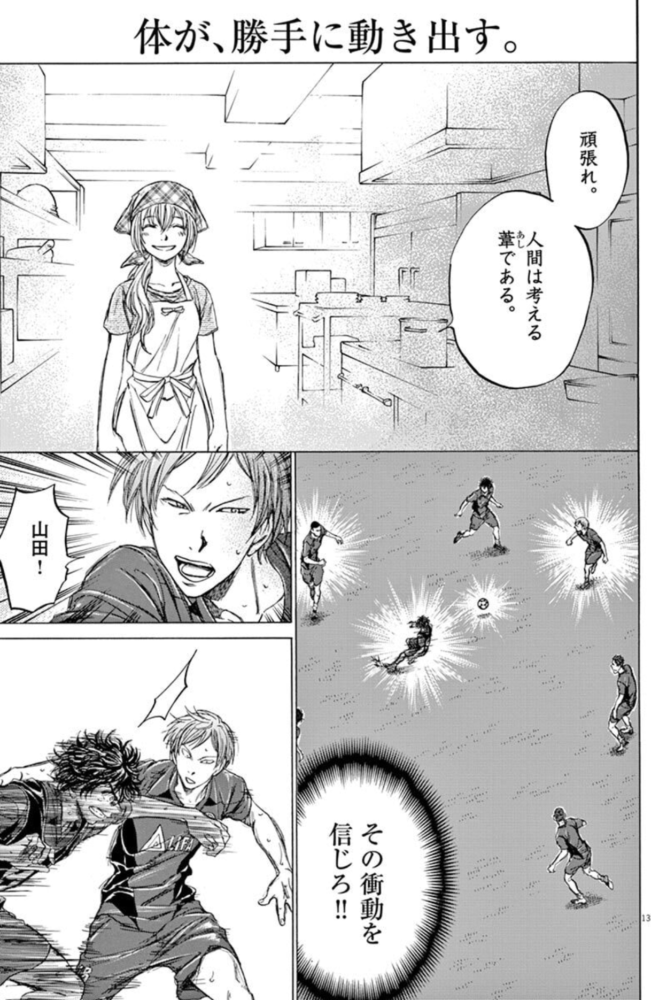
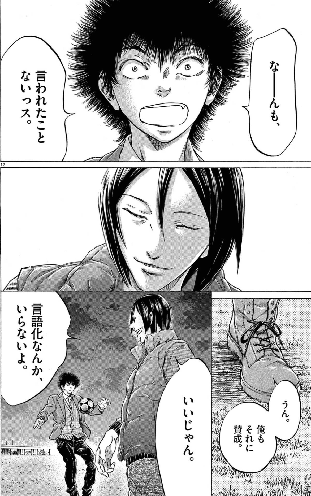
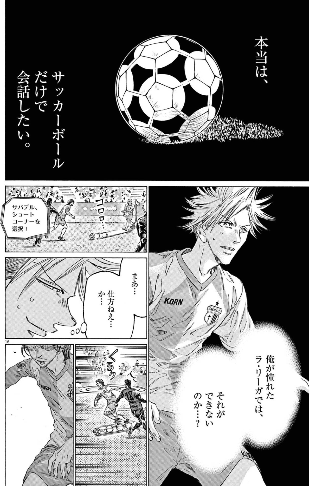
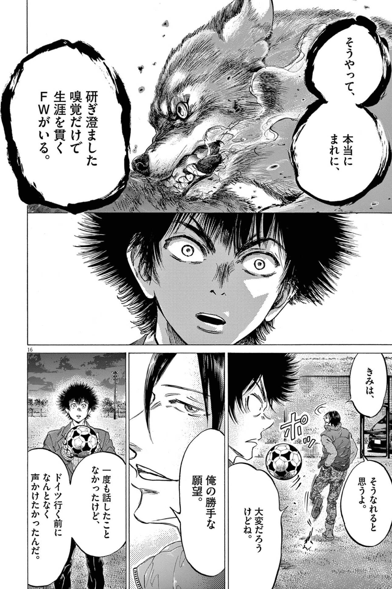
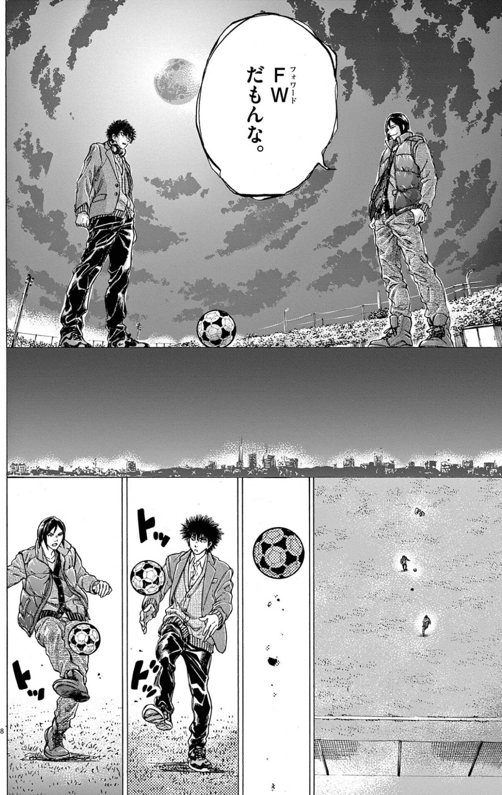

読書ログ #9 —— アオアシ × 暗黙知の次元 × ファスト&スロー
すべてを言葉にすることが、誠実さではない。語れない領域にこそ、矜持と凄みが宿る。
1. 「言語化」の、次元が違う
アオアシのスペイン編で、アシトは、技術以上の壁にぶつかる。

「『言語化』の次元が違うんや…!」。アシトの強みは、自分のプレーを言葉にして、考えて、再現することだった。#4 で視た「思想者型」の指導が、彼を「言語化できる選手」に育てた。けれど、トップの世界には、その言語化を、もう一段超えたところでプレーする者がいる。
考えて言葉にするより、速い何か。今回は、その「語れない領域」を、二冊と並べて視たい。ダニエル・カーネマン『ファスト&スロー』と、マイケル・ポランニー『暗黙知の次元』。アオアシを読む連作も、これで最終回だ。
2. ファスト&スロー：速い思考と、遅い思考
カーネマンの『ファスト&スロー』は、人間の思考を二つのシステムに分ける。
システム1は、速い。直感的で、自動的で、努力がいらない。熱いものに触れて手を引く、母語を聞き取る、顔色を読む。システム2は、遅い。論理的で、意識的で、努力がいる。暗算する、慣れない規則に従う、慎重に選ぶ。
人間は、ほとんどシステム1で動いている。システム2は、いざというとき呼び出される、重い装置だ。アシトの「言語化して、考えて、再現する」は、典型的なシステム2の営みだった。丁寧だが、遅い。
3. 「考えてなくねえか?」——圧縮されたシステム2
スペインのトップを見たスカウトが、こう漏らす。

「考えてなんかなくねえか?」。トッププレーヤーのプレーは速すぎて、いちいち考えているようには見えない。でも、彼らが何も考えていないわけではない。逆だ。膨大なシステム2の訓練が、脳内でパターンとして沈殿し、システム1に化けている。考えなくていいほど、考え抜いた跡。圧縮されたシステム2が、直感の速さで動く。

「体が、勝手に動き出す」。「その衝動を信じろ」。これは、考えるのをやめろという話ではない。考え抜いた末に、考えが体へ沈んだ状態を、信じろという話だ。アシトが頭でやっていた言語化を、彼らは、もう身体でやっている。
4. 暗黙知の次元：語れる以上のことを、知っている
ここで、マイケル・ポランニーの『暗黙知の次元』を重ねる。(『大転換』のカール・ポランニーとは、別人だ。)
この本の核心は、たった一行に畳める。「我々は、語れる以上のことを知っている」(We know more than we can tell)。
自転車に乗れる人は、どうやってバランスを取っているか、言葉では説明できない。熟練の職人は、なぜこの木目をこう削るか、言い切れない。知識には、言葉にできる形式知と、言葉にできない暗黙知がある。そして、達人の知の中核は、たいてい暗黙知のほうにある。
トップ選手の「考えてなくねえか?」の正体は、これだ。彼らの知は、言語化の次元を超えて、暗黙知に沈んでいる。語れないから劣っているのではない。語れないほど、深く知っている。
5. あえて、言語化をしない
面白いのは、アオアシが「言語化」を、ただ礼賛しないことだ。

「なーんも、言われたことないっス」——指示を言葉でもらった覚えがない、と言う選手に、ある選手は静かに返す。「言語化なんか、いらないよ。いいじゃん」。
言葉にすると、確かに掴める。再現できる。けれど、言葉にした瞬間、そこからこぼれ落ちるものがある。言語化は、豊かな暗黙知を、語れる範囲に切り詰める——限界化でもある。
だから、達人はときに、あえて言語化をしない。言葉にして掴むより、語れないまま、丸ごと体に置いておく。これは、#5 で視た福田の姿勢の、裏側だ。福田は言語化を徹底して求めながら、言語化できないものも守っていた。言葉にする勇気と、言葉にしない勇気。その両方を持つことが、たぶん達人の条件だ。
6. 非言語の、会話
語れない知は、語らないまま、人と人のあいだで通じる。

「本当は、サッカーボールだけで会話したい」。福田の、この一言が好きだ。#7 で視たように、彼は言葉の通じない異国で戦った。けれど、ボールがあれば、言葉はいらない。パス一本に意図が乗り、トラップひとつで返事が返る。プレーそのものが、暗黙知でやりとりされる会話になる。
言語が通じないからこそ、純度の高い非言語の対話が立ち上がる。最高の連携には、たいてい、言葉がない。
7. 研ぎ澄まされた、矜持
そして、アオアシがFWという存在を描くとき、その筆は、いちばん凄みを帯びる。

「研ぎ澄ました嗅覚だけで、生涯を貫くFWがいる」。点を取るという、たった一つの結果のために、嗅覚だけを研ぎ澄ます。理屈でも、言葉でもない。ゴールの匂いを嗅ぎ分ける、説明のつかない直感——まさに暗黙知だ。決めきれなければ、何も残らない。その過酷な純度に、生涯を賭ける覚悟。これが、FWの矜持だ。

「FWだもんな」。長い時間をかけて積み上げたものが、最後はこの短い一言に畳まれる。時間の蓄積からくる凄みは、饒舌ではない。むしろ寡黙だ。語れる以上を知っている者は、たいてい、多くを語らない。
8. 観測と、暗黙知
最後に、OrbitLens に繋げたい。
正直に、認めなければならない。EIS が観測できるのは、形式知のほうだけだ。git の履歴に残るのは、コミット、差分、blame——言葉と数字にできるものだけ。決めきる覚悟、非言語の連携、考える前に動く直感、語らない矜持。この回でずっと視てきた暗黙知は、観測の網から、根こそぎこぼれる。
#5 で「メティスは可読化からこぼれる」と書いた。それは、ここでも同じだ。むしろ、いちばん凄いものほど、観測には映らない。
だとしたら、観測にできる誠実さは、ひとつだ。自分が掴めているのは、語れる部分だけだと、認めること。スコアに出た数字を、その人のすべてだと思わないこと。Signals, not Scores は、ここでも効く。観測は、語れる信号を映すが、語れない凄みの存在を、消してはならない。観測の外に、いちばん大事なものがある——そう知ったうえで、観る。
すべてを言葉にすることが、誠実さではない。語れない領域を、語れないまま尊重することも、誠実さだ。
観測できないものを、無いことにしない。たぶんそれが、望遠鏡を持つ者の、最後の矜持だ。
アオアシを読み終えて
#4 から #9 まで、アオアシを六つの角度から視てきた。
#4 で、俯瞰という知覚を獲得し、#9 で、語れない暗黙知にたどり着いた。両端は、どちらも「言葉になる前の、視ること・知ること」だ。アシトは、言語化で世界を掴み、最後に、言語化を超えていった。連作全体が、ひとつの円を描いていた。
見出し、育て、環境を作り、本質を守り、語れないものを尊重する。一本のサッカー漫画に、組織と観測のすべてが入っていた。次は、別の作品へ——でも、アシトが教えてくれた「視ること」は、ずっと続いていく。
白状しておきたいこと
ここまで書いて、ひとつ白状しておきたい。
この連作は、毎回きれいに「構造」へ着地しすぎた。アオアシのすべてが、都合よく概念に対応したわけではない。本当は、概念に収まらない過剰さも、どちらにも転ぶ曖昧さもあった。それを、僕は構造に合うように切り取ってきた。#5 で「可読化は、メティスをこぼす」と書いた——その可読化を、僕自身がこの連作でやっていた。物語を、読みやすい形に整えながら。
毎回 OrbitLens へ折り返したのも、正直に言えば、漏斗だ。観測の話に落とせば締まると知っていて、そこへ流した。便利な型は、いつのまにか型のための型になる。#8 で書いたことが、そのまま自分に返ってくる。
だから、いつか——次とは限らない、良いテーマに出会えたら——思想書に負けてみたい。OrbitLens の思想が、ある本に揺さぶられて、修正される回。構造がほどけ、漏斗から水がこぼれる回。語れないものを尊重すると言いながら、語れる形に整えすぎた連作への、これは自分への、急がない宿題だ。それを書けたとき、この読書ログはやっと、自分が掲げた「観測の倫理」に追いつく。
取り上げた本
次回予告
アオアシを読む連作は、これで完結。次回 #10 からは、別の作品へ。小山宙哉『宇宙兄弟』を、マルセル・モース『贈与論』と並べて読む。突出していない人の、静かな熱。数えにくい貢献が、共同体をどう支えているのか。
本記事は小林有吾『アオアシ』、マイケル・ポランニー『暗黙知の次元』、およびダニエル・カーネマン『ファスト&スロー』への個人的な考察です。
OrbitLens / machuz